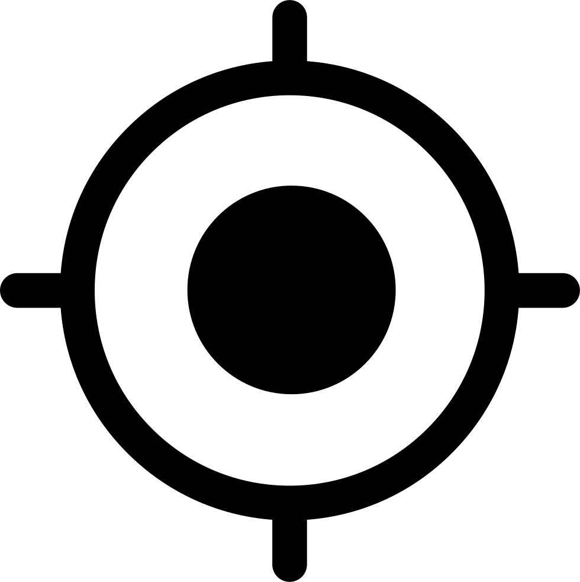

<ion-header>

    <ion-toolbar color="primary">
        <ion-title *ngIf="!isSearchbarOpen">Lost & Found</ion-title>
        <ion-buttons slot="start">
            <ion-menu-button></ion-menu-button>
        </ion-buttons>

        <ion-searchbar *ngIf="isSearchbarOpen" showCancelButton="true" (ionCancel)="isSearchbarOpen=false" [(ngModel)]="autocomplete.input" (ionInput)="updateSearchResults()" placeholder="Search for a place">
        </ion-searchbar>
        <ion-buttons slot="end" size="medium" *ngIf="!isSearchbarOpen">
            <button ion-buton icon-only (click)="isSearchbarOpen=true">
                <ion-icon slot="icon" name="search"></ion-icon>
            </button>
        </ion-buttons>


    </ion-toolbar>
</ion-header>

<ion-content>
    <ion-list style="width: 90%;left: 5%; max-height: 200px; overflow-y: scroll;" [hidden]="autocompleteItems.length == 0">
        <ion-item *ngFor="let item of autocompleteItems" tappable (click)="selectSearchResult(item)">
            {{ item.description }}
        </ion-item>
    </ion-list>
    <div #mapContainer id="map"></div>


    <ion-fab vertical="bottom" horizontal="end" slot="fixed">
        <ion-fab-button>
            <ion-icon name="add"></ion-icon>
        </ion-fab-button>
        <ion-fab-list side="top">
            <ion-fab-button href="../postlost" color="danger" (click)="do1()" data-desc="Post Lost">
                <ion-icon name="gift"></ion-icon>
            </ion-fab-button>
            <ion-fab-button href="../postfound" color="danger" (click)="do2()" data-desc="Post Found">
                <ion-icon name="search"></ion-icon>
            </ion-fab-button>
        </ion-fab-list>
    </ion-fab>

    <ion-fab vertical="top" horizontal="end" slot="fixed">
        <ion-fab-button size="small" color="light" (click)="getLocation()">
            
        </ion-fab-button>
        <ion-fab-button size="small" color="light" (click)="displayallmarkers()">
            <ion-icon name="search"></ion-icon>
        </ion-fab-button>
    </ion-fab>


    <!-- 
    <ion-fab vertical="bottom" horizontal="end">
        <ion-fab-button>
            <ion-icon name="add"></ion-icon>
        </ion-fab-button>
        <ion-fab-list side="top">
            <ion-fab-button (click)="do1()" data-desc="Description 1">
                <ion-icon name="contact"></ion-icon>
            </ion-fab-button>
            <ion-fab-button (click)="do2()" data-desc="Description 2">
                <ion-icon name="person-add"></ion-icon>
            </ion-fab-button>
        </ion-fab-list>
    </ion-fab> -->
</ion-content>